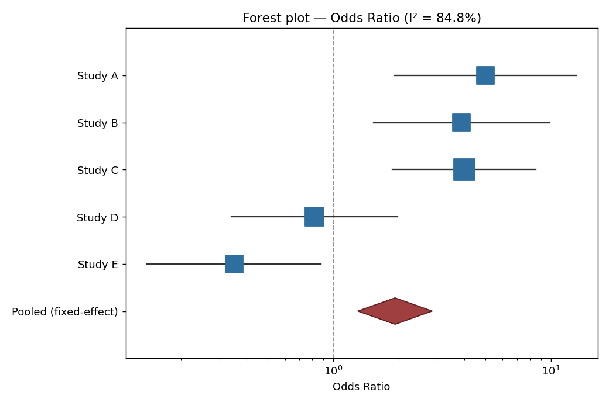
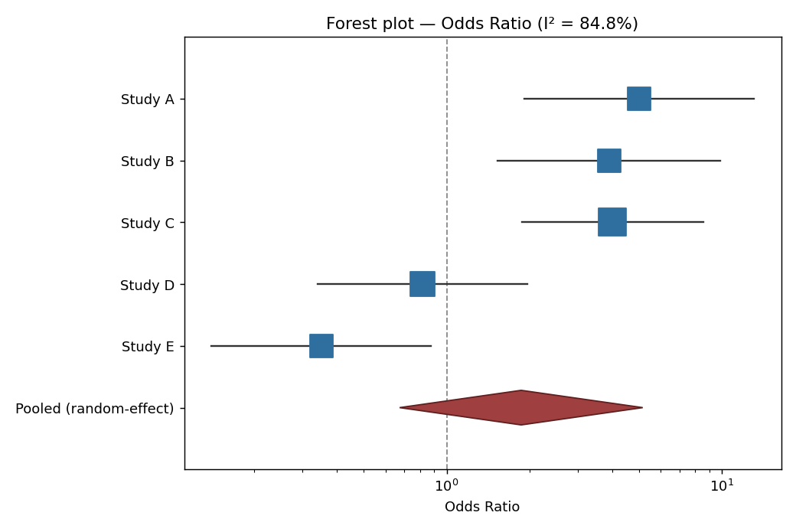

Module 18 — Track 1: Core EngineForest Plot Renderer
00Before You Start
Finished Module 17 —
this module renders that module's exact output, both the fixed- and
random-effects versions.
01The Big Analogy
The technique's own name, taken literally, again
A forest plot is named for exactly what it looks like: many thin
horizontal lines stacked in rows, each with a marker somewhere along
it — squint, and it resembles a row of tree trunks standing in a
forest. But a forester doesn't judge the whole forest by trunk count
alone; there's a clearing at the bottom marking where the forest's
real canopy centers once every tree's actual girth is weighed in —
thicker trees (more precise studies) pull that center more than thin
saplings do.
The squares in render_forest_plot() are the trunks, sized
by 1/SE² — a study's actual statistical weight. The
diamond is the clearing: the pooled estimate, its width showing exactly
how confident the combined forest is.
02What Happens, Step by Step
- For each study,
_to_natural() converts its pooling-scale estimate and SE back to a displayable point + CI (undoing the log transform for OR/RR, same as Module 17's own display_estimate())
- Each study becomes one row: a horizontal line spanning its CI, with a square marker sized proportionally to its inverse-variance weight
- The pooled result becomes a diamond, its horizontal span equal to the pooled confidence interval
- A dashed vertical line marks the no-effect value (1.0 for ratios, 0.0 for differences)
- The x-axis switches to a log scale automatically whenever the measure is a ratio, exactly mirroring Module 17's scale-aware logic
- The figure is saved as a real PNG and — in this module's self-checks — read back and verified by its actual file bytes
03A Map of the State
Both plots below are the actual, unedited files this module produced
from Module 17's real pooled results — not mockups.

Fixed-effect model — the diamond sits entirely right of the dashed no-effect line.

Random-effects model, same five studies — the diamond now visibly straddles the no-effect line.
04The Code, Explained
marker_size = 60 + 340 * (weight / max_weight)
ax.scatter([est], [y_pos], s=marker_size, marker="s", color="#2f6f9f", zorder=3)
# ...
diamond = mpatches.Polygon(
[[pooled_lo, diamond_y], [pooled_est, diamond_y + half_height],
[pooled_hi, diamond_y], [pooled_est, diamond_y - half_height]],
closed=True, facecolor="#9f3f3f", edgecolor="#5f1f1f", zorder=3,
)
The diamond is drawn as an explicit four-point polygon — left tip at
the pooled CI's lower bound, right tip at its upper bound, top and
bottom points at the pooled estimate itself — which is exactly what
gives it its width-equals-uncertainty shape.
05Limits / What You Cannot Do Yet
Can't do yet
- Render a subgroup-split forest plot (studies grouped by, say, study design) — one flat list only
- Show a funnel plot for publication bias — that's Module 19
- Export to any format besides PNG (SVG/PDF are one-line matplotlib changes, just not wired up here)
Can do
- Turn a real pooled meta-analysis result into a real, field-standard chart
- Correctly scale markers by real statistical weight, not a cosmetic guess
- Make the fixed-vs-random-effects divergence visually obvious, not just numerically true
06Run It
python forest_plot.py
Expected output (deterministic, no network involved):
All self-checks passed.
fixed-effect forest plot: forest_plot_fixed.png, 30482 bytes, valid PNG header: True
random-effect forest plot: forest_plot_random.png, 30290 bytes, valid PNG header: True
Getting a backend error mentioning Tkinter or a display?
Something imported matplotlib.pyplot before this module's
matplotlib.use("Agg") call took effect — make sure no
other import in your session already loaded pyplot with a different
backend first.
07Brain Exercise
Study D's square is visibly smaller than Study A's in both plots. Why doesn't the random-effects model change that?
Because each study's drawn marker size reflects that study's
own precision (its individual `1/SE²`), which doesn't change
depending on which pooling model is used afterward — Study D's
underlying data and sample size are the same regardless. What
does change between the two plots is invisible at the
individual-study level and only shows up in the diamond: the
random-effects model re-weights every study's contribution to
the pooled estimate using `1/(SE² + τ²)` instead of `1/SE²`
alone — you can't see that re-weighting in any single square, only
in how much wider and differently-centered the final diamond ends
up.
08There Are No Dumb Questions
Why is the diamond a separate shape instead of just a wider square?
Convention, but a load-bearing one — anyone who has read a published forest plot recognizes a diamond as "this row is the summary, not another individual study" at a glance. Using a square for both would make the pooled result blend in with the individual studies instead of standing apart from them.
What would happen if I fed this an SMD-based meta-analysis instead of an OR-based one?
The x-axis would stay linear instead of switching to log scale, and the no-effect line would be drawn at 0 instead of 1 — both handled automatically by checking `meta_result.scale`, the same field Module 17 already computes. No code in this module needs to change for that to work correctly.
Is 30KB a reasonable size for a plot like this, or could that number hide a broken image?
It's consistent with a real, moderately detailed matplotlib chart at 130 DPI — a genuinely blank or near-blank PNG would typically be under a kilobyte, which is exactly why the self-checks assert a size floor of 1000 bytes rather than just checking the file exists.
09What's Next
A forest plot shows how studies agree or disagree with each other —
it says nothing about whether the studies included are a biased sample
of all the evidence that exists. Module 19 builds a publication bias
detector: a funnel plot, plus Egger's test.